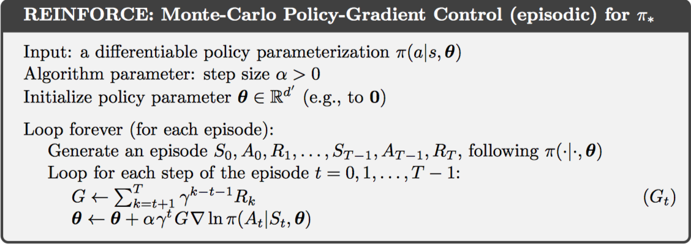
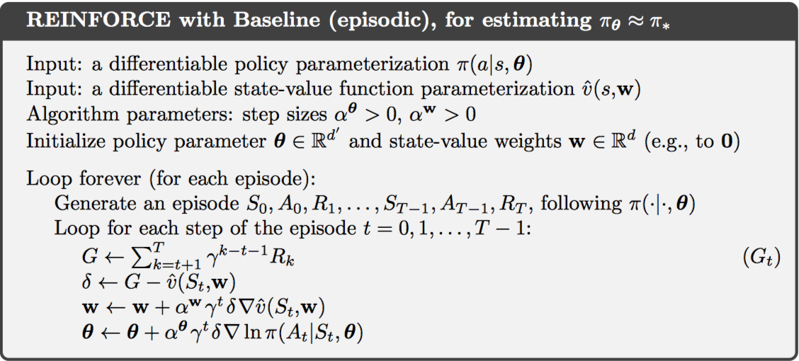
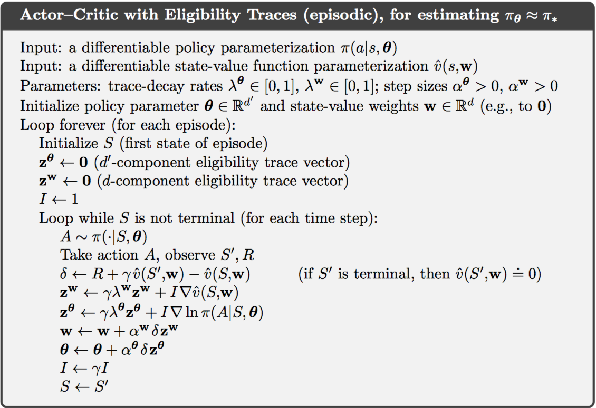
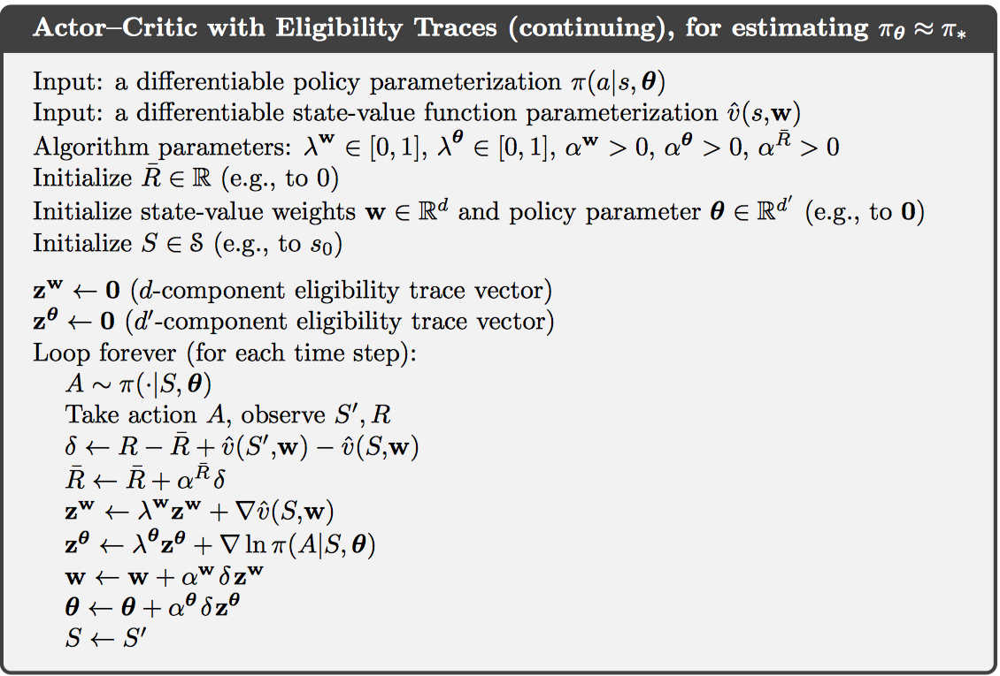

Chapter 13 Policy Gradient Methods
之前所学到的都是基于动作值函数的方法，这一章则是参数化策略的方法。因此，定义策略为如下数学式： 并且使用$J ( \theta )$衡量模型的好坏，使用梯度下降法更新权重如下： 凡是遵循这种模式的方法都称作策略梯度的方法，其中，同时学习值函数的方法称作actor-critic。
13.1 Policy Approximation and its Advantages
首先是离散动作空间的方法。通常可以得到每个状态-动作对的数字化偏好程度$h ( s , a , \theta ) \in \mathbb { R }$，直接选择最大值对应动作即可。如果使用softmax处理，则可以得到完整的概率分布，如下： 上述这种形式的参数化策略称作softmax in action preferences，其中的h函数可以采用任意的拟合方法，如神经网络等等。
相较于动作值函数的方法，参数化策略有以下优点：
- 最终可以得到一个确定的策略，而$\epsilon-greedy$有一定概率随机选择动作。
- 允许以任意概率选择某个动作。
- 策略函数可能更加直接，并且拟合更加简单。
- 便于添加先验知识。
13.2 The Policy Gradient Theorem
除了上节中优点之外，策略梯度的方法使得动作概率可以平滑变化，而不是像$\epsilon-greedy$中动作可能发生突变。正是由于依赖于策略连续性，使得策略梯度的方法逼近梯度上升过程。
针对片段式任务而言，定义评价指标为起始状态的值函数，如下： 以上指标依赖于状态分布，计算对于策略参数的梯度值较为困难。因此，有策略梯度定理如下，不涉及状态分布： 在片段式任务中，比例值取片段的平均长度；对于连续式任务，则取1。
13.3 REINFORCE: Monte Carlo Policy Gradient
上一节中的策略梯度定理可以改写为期望形式，如下： 其中，Gt即为返回值，则权重更新公式如下： 这个算法也称作REINFORCE算法，因为使用了某个时刻的完整返回值，因此REINFORCE也是一种MC算法，只定义在片段式任务中。

上图中给出的算法替换为对数导数，并且引入了折扣情况。
这种REINFORCE算法具有高方差的特点，学习过程较慢。
13.4 REINFORCE with Baseline
上一节中的策略梯度定理可以扩展到baseline的情况，如下： 只要满足baseline函数与动作a无关即可，则权重跟新如下： 带baseline的REINFORCE算法，使得更新的期望值不变，但方差大大降低。一种常见的baseline选择方式是动作值函数，因此只需要同时学习动作值函数网络的参数即可。

该算法有两个步长，需要手动设置如何调整。
13.5 Actor–Critic Methods
尽管带baseline的REINFORCE算法同时学习动作值函数和策略，但仍不是actor-critic算法，因为没有使用自引导机制。通过自引导和依赖状态表示所引入的偏差通常是有益的，因为这可以降低方差，并且加速学习。而带baseline的REINFORCE是无偏的。
one-step actor-critic将返回值替换为one-step return即可，如下： 状态值函数可以使用semi-gradient TD(0)的方法进行学习。

上述是一种前向算法，而后向的$\lambda$-return算法也十分常用，完整的伪代码如下：

13.6 Policy Gradient for Continuing Problems
对于连续式任务，定义评价指标为每个时刻奖励的均值，如下： 另外，定义的值函数也都是差值值函数。

13.7 Policy Parameterization for Continuous Actions
之前所讨论的都是离散动作空间，对于连续动作空间，需要学习一个概率分布。例如，策略可以定义为实数动作，而动作选择的概率对应为高斯概率密度函数上的值，需要学习的则是高斯函数的均值和方差。
13.8 Summary
这一章主要介绍直接学习参数化策略的方法，即策略梯度的方法。
核心原理是策略梯度定理。算法包括REINFORCE、带baseline的REINFORCE和actor-critic等。